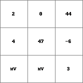
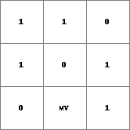
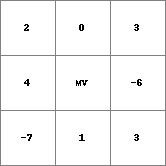
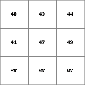

if then else
Boolean condition determining whether value of the first or second expression is assigned to result
Result = if(condition then expression1 else expression2)
Result = if(condition, expression1, expression2)
The cell values on condition are interpreted as Boolean values where 1 is TRUE and 0 is FALSE. For each cell, the cell value on condition determines whether the value of the corresponding cell on expression1 or expression2 is assigned to the corresponding cell on Result: if condition has a cell value 1 (TRUE) the value on expression1 is assigned Result, if condition has a cell value 0 (FALSE) the value on expression2 is assigned to Result.
A cell with a missing value on condition results in a missing value on Result at the corresponding cell. A cell with a value 1 (TRUE) on condition and a missing value on expression1 results in a missing value on Result. Also, a cell with a value 0 (FALSE) on condition and a missing value on expression2 results in a missing value on Result.
Remember that the data type of expression1 must correspond with the data type of expression2.
Comma’s between condition, expression1 and expression2 in the command line is an alternative notation for then else.
If you want to cut an local drain direction map (data type ldd), use the operator lddmask instead of if then else. The operator if then else allows for cutting expressions (expression1, expression2) of data type ldd but we advice to use it in very special cases only; it will result in an unsound ldd.
This operation belongs to the group of Conditional operators
| Result.map | Cond.map | Expr1.map | Expr2.map |
|  |  |  |  |